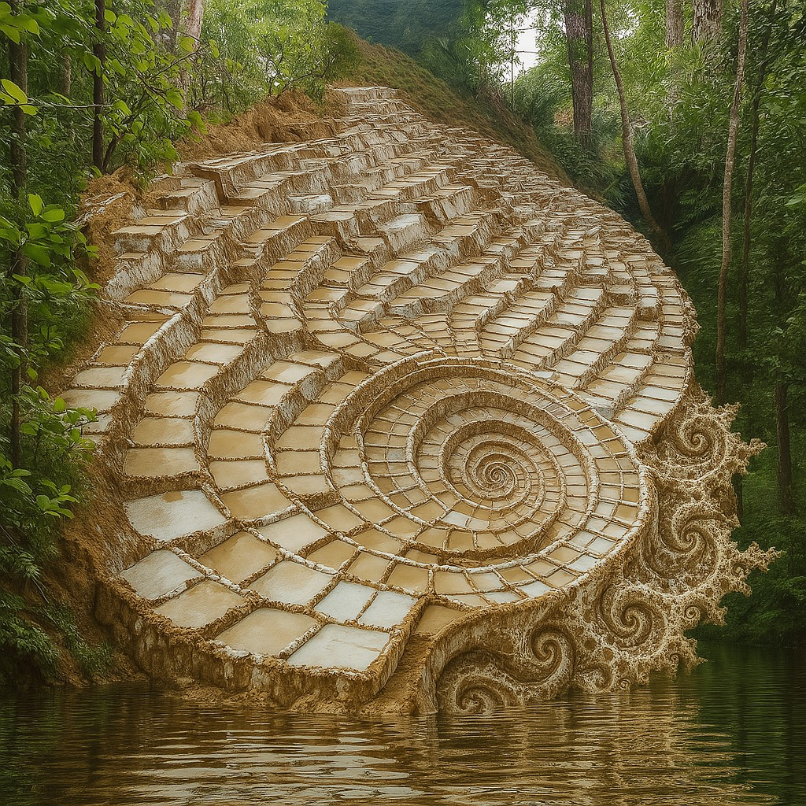
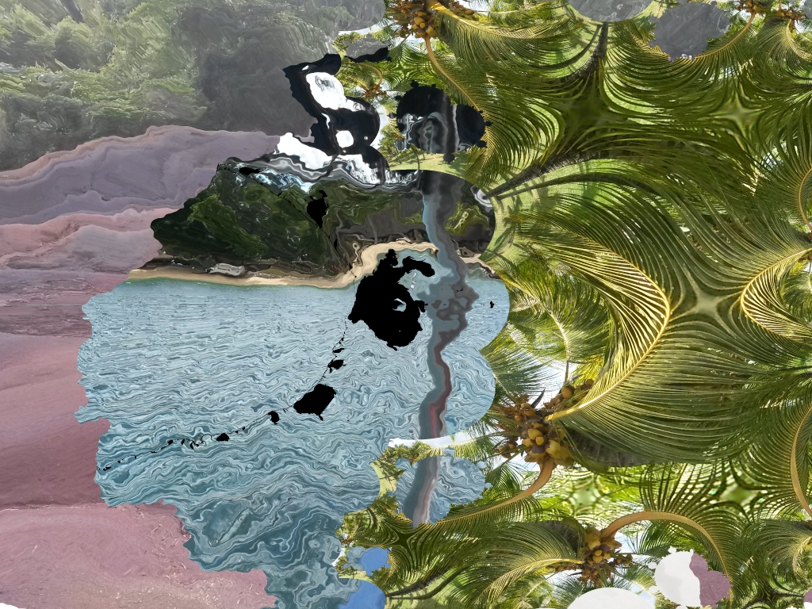

Salle 1 — Marché à Hampi
Salle 1 — Marché à Hampi
| Élément | Lien |
|---|---|
| Piliers musicaux du temple Vithala | 🎶 Écouter |
| Ambiance ruines de Hampi | 🏛️ Découvrir |
| Narration historique immersive | 🎙️ Explorer |

| Élément | Lien |
|---|---|
| Gamelan balinais & sons de cérémonie | 🎶 Écouter |
| Visite immersive de Bali | 🏛️ Découvrir |
| Sons de prière et offrandes | 🎙️ Explorer |
 />
/>
| Élément | Lien |
|---|---|
| Berceuse des rizières | 🎶 Écouter |
| Musique néoclassique inspirée du riz | 🏛️ Découvrir |
| Ambiance matinale dans les champs | 🌾 Explorer |

| Élément | Lien |
|---|---|
| Chants traditionnels amazoniens | 🎶 Écouter |
| Ambiance forêt & rivières | 🏛️ Découvrir |
| Icaro sacré — chant chamanique amazonien | 🎶 Écouter |

| Élément | Lien |
|---|---|
| Chants traditionnels amazoniens | 🎶 Écouter |
| Ambiance forêt & rivières | 🏛️ Découvrir |
| Icaro sacré — chant chamanique amazonien | 🎶 Écouter |